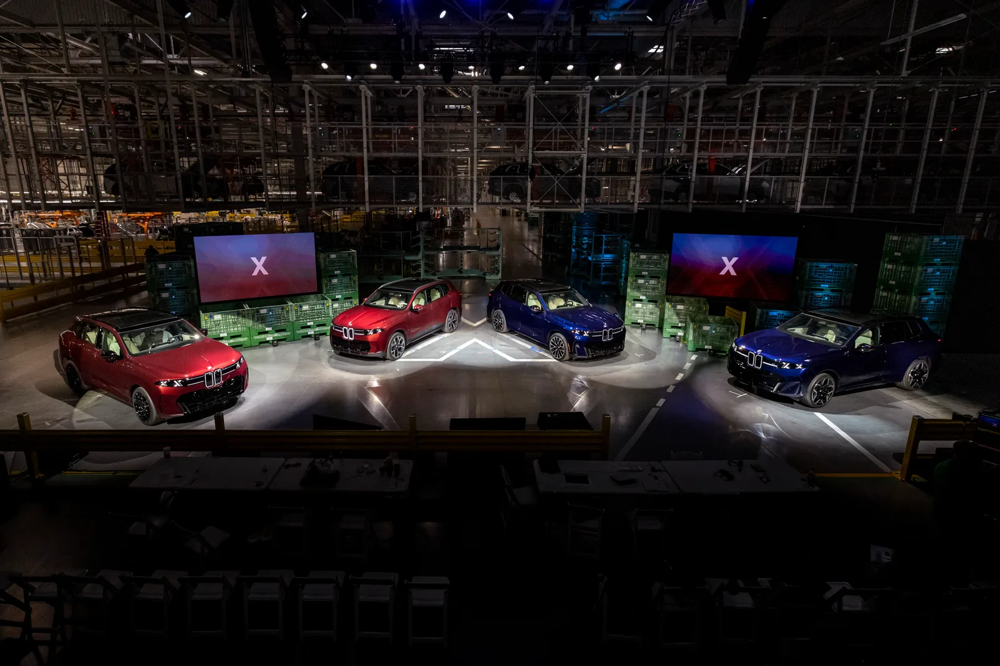
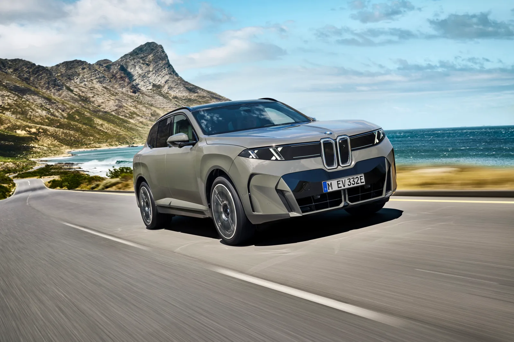
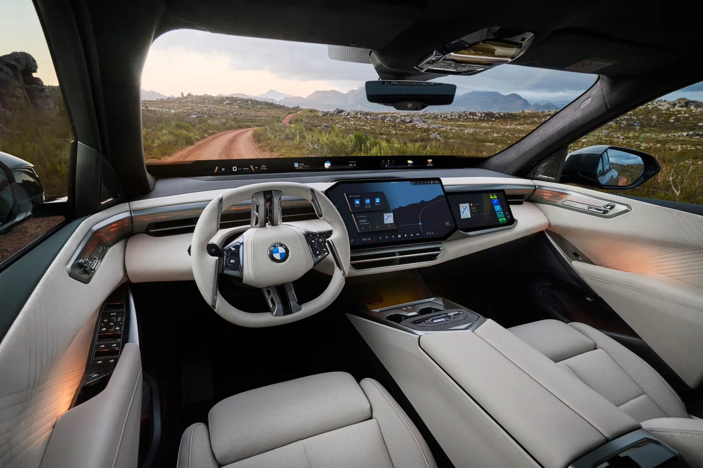
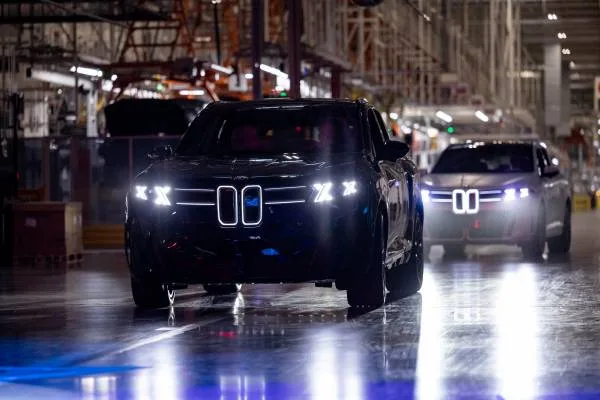
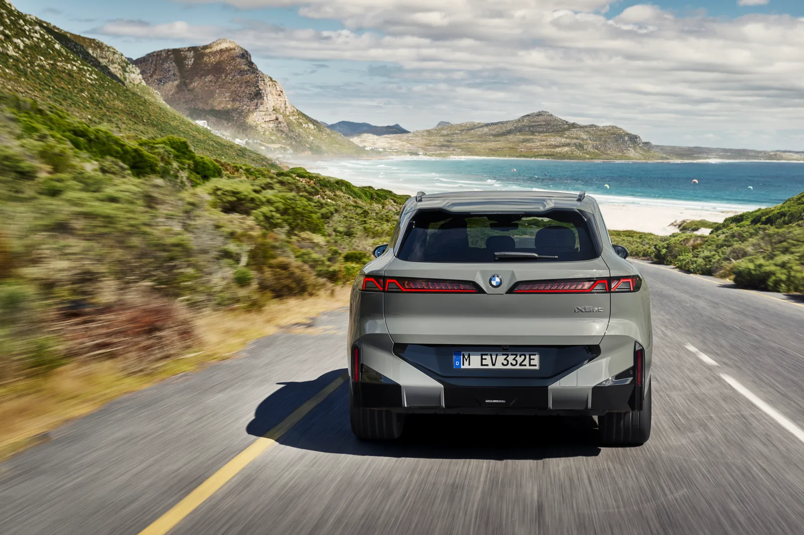
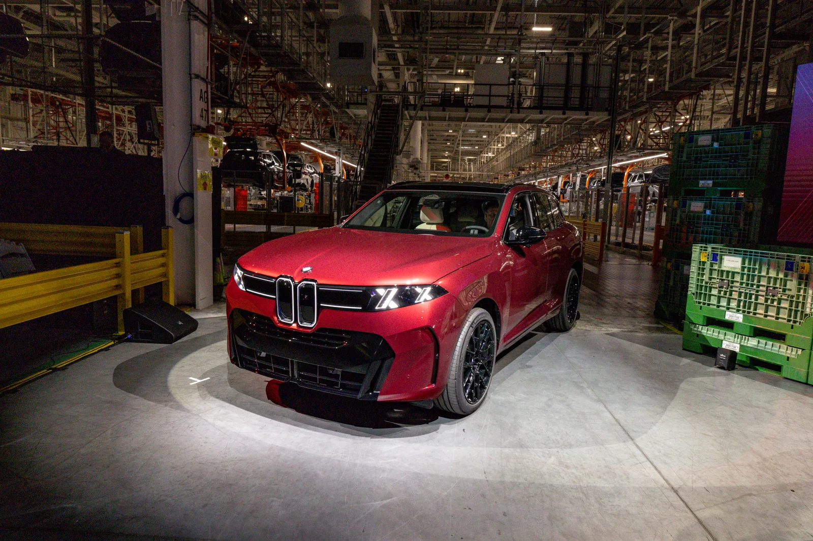

▲ 5세대 완전변경 BMW X5가 노이어클라쎄 디자인언어를 입고 데뷔 무대에 올랐다. (사진=BMW 프레스룸)
① "연내 데뷔" 예고… 국내 공식 론칭 초읽기
지피코리아는 최근 보도에서 BMW코리아가 5세대 완전변경 X5의 연내 공식 론칭을 준비하고 있다고 전했다. 공식 론칭 행사와 사전계약 등 국내 출시 수순이 임박한 가운데, 정부 인증 절차만 남겨둔 상태로 알려졌다. 지피코리아 원문에서 확인 가능 →
신형 X5의 글로벌 데뷔는 이미 이뤄졌다. BMW는 지난 6월 30일(현지시간) 미국 사우스캐롤라이나 스파르탄버그 공장에서 5세대 X5와 형제차인 순수전기 iX5 60 xDrive를 나란히 세계 최초 공개했다. 북미 시장에는 가솔린 모델인 X5 40 xDrive를 시작으로 2026년 10월부터 순차 출시되며, 나머지 파워트레인은 2027년 1분기 안에 합류한다. 국내 출시는 이보다 다소 늦은 시점이 유력하지만, BMW코리아가 연내 론칭을 예고한 만큼 인증 완료 즉시 공식 발표가 뒤따를 전망이다. 업계에서는 환경 인증 절차 등을 고려할 때 국내 정식 판매는 2027년, 늦으면 2028년 초까지 이어질 수 있다는 관측도 나온다. 가격은 아직 미정이지만 4세대 X5(G05)의 국내 판매가와 미국 출시가 인상 폭을 함께 고려하면 9천만원대 중반에서 1억원 초반대 사이에서 형성될 가능성이 거론된다.

▲ 수직으로 정렬된 킥니 그릴과 더블-X 헤드램프가 신형 X5의 새 얼굴을 완성했다 ⓒ BMW Group
② 노이어클라쎄, X5에는 이렇게 적용됐다
신형 X5는 BMW가 준중형 SUV급에 처음으로 노이어클라쎄 디자인언어를 전면 이식한 모델이다. 전면부는 좌우 킥니 그릴을 수직으로 정렬해 얇게 다듬고, 그 안쪽에 은은하게 빛나는 '킥니 아이콘 글로우'를 넣었다. 헤드램프에는 오래전부터 루머로 돌던 더블-X 모티프가 실제로 반영돼, 기존 X 패밀리 SUV와 뚜렷하게 구분되는 얼굴을 완성했다. 각지고 공격적이던 이전 세대의 선 대신, 노이어클라쎄 콘셉트카에서 예고했던 매끈하고 절제된 차체 표면으로 완전히 갈아탔다.
실내 변화는 더 급진적이다. 17.9인치 트라페조이드(사다리꼴) 형태의 프리스탠딩 중앙 디스플레이가 대시보드 대부분을 대체했고, windshield 하단부를 가로지르는 'BMW 파노라마 비전'과 3D 헤드업 디스플레이가 추가됐다. 스티어링 휠은 2-스포크 형태의 기하학적 디자인으로 바뀌었으며, 새 안드로이드 기반 운영체제 'BMW 오퍼레이팅 시스템 X'가 탑재된다. 노이어클라쎄 '클리어&볼드' 인테리어 콘셉트에 맞춰 슬레이트 소재 장식과 크리스털 유리 재질의 기어 셀렉터·볼륨 컨트롤도 새롭게 적용됐다.

▲ 대시보드 전체를 가로지르는 BMW 파노라마 비전과 2-스포크 스티어링 휠이 실내 분위기를 완전히 바꿔놨다 ⓒ BMW Group

▲ 어둠 속에서 더욱 도드라지는 더블-X 헤드램프. 두 대의 신형 X5가 나란히 불을 밝히며 새 얼굴을 과시했다 ⓒ BMW Group
③ 가솔린부터 수소까지… 5가지 파워트레인 최초 동시 탑재
신형 X5는 BMW 양산차 중 처음으로 가솔린, 디젤, 플러그인 하이브리드, 순수전기, 수소연료전지까지 5가지 구동 방식을 한 세대에 담는다. 확정된 라인업은 다음과 같다.
| 모델 | 파워트레인 | 출력/토크 | 주요 수치 |
|---|---|---|---|
| X5 40 / 40 xDrive | 3.0L 직렬 6기통 터보 + 마일드 하이브리드 | 394마력 / 428lb-ft(약 580Nm) | 정지→시속 96km 4.8~5.1초 |
| X5 50e xDrive | 직렬 6기통 + 전기모터 PHEV | 483마력 / 516lb-ft(약 700Nm) | 사용 가능 배터리 26.5kWh, 전기 주행 약 71km |
| iX5 60 xDrive | 듀얼모터 순수전기 | 570마력 / 593lb-ft(약 804Nm) | 사용 가능 배터리 141kWh, WLTP 최대 845km, 800V·460kW 급속충전 시 10~80% 22분 |
| M 퍼포먼스(예정) | V8(북미형) / M60e 3.0L 직렬6기통 PHEV(유럽형) | V8 미공개, M60e 603마력·800Nm | 유럽 M60e는 2027년 초, 북미 V8은 2027년 하반기 합류 예정(M60e는 북미 미판매) |
| iX5 Hydrogen(예정) | 수소연료전지 | 미공개 | 2028년경 출시 예정, BMW 최초 수소 양산차 |
국내 시장에는 디젤을 제외한 가솔린·PHEV·순수전기 트림이 중심이 될 것으로 예상된다. 이미 국내에도 소개된 바 있는 iX5 60 xDrive는 BMW 프레스룸에서 상세 제원 확인 가능 → 141kWh급 원통형 배터리 셀과 800V 아키텍처를 앞세워 BMW 전기 SUV 중 최장 항속거리를 기록한다.
④ 기존 X5(G05)와 무엇이 달라졌나
2018년부터 판매돼 온 4세대 X5(G05)와 비교하면 변화의 폭이 크다. G05가 각진 크롬 그릴과 다소 보수적인 실내 레이아웃을 유지했다면, 신형 G65는 노이어클라쎄 콘셉트카의 미래지향적 조형을 거의 그대로 양산에 옮겼다. 물리 버튼 중심이던 공조·주행모드 조작부는 대부분 디지털 인터페이스로 흡수됐고, 2.5존 기본·4존 선택형 자동 공조와 보워스&윌킨스 775W 사운드 시스템, 약 28제곱피트(약 2.6㎡)에 달하는 파노라믹 글래스 선루프 등 편의 사양도 한 단계 끌어올렸다.
가격 면에서는 미국 기준 2026년 10월 최초 출시되는 X5 40 xDrive가 7만2,100달러(목적지 배송료 별도)부터 시작하며, 2027년 1분기에 합류하는 후륜구동 사양 X5 40은 6만9,800달러, iX5 60 xDrive는 7만9,800달러로 책정됐다. 국내 가격은 아직 공개되지 않았지만, 새 파워트레인과 대형 디스플레이 등 원가 상승 요인을 고려하면 기존 대비 인상이 유력하다는 관측이 나온다.

▲ 후면부는 얇게 이어지는 테일램프와 완만한 루프라인으로 기존 4세대 X5(G05) 대비 훨씬 유선형에 가까워졌다 ⓒ BMW Group
⑤ 벤츠 GLE·아우디 Q7과의 경쟁 구도는
준대형 럭셔리 SUV 시장에서 X5의 직접 경쟁자는 메르세데스-벤츠 GLE와 아우디 Q7이다. GLE는 국내에서 현재 1차 페이스리프트 모델이 1억1,300만~1억6,060만원대에 판매 중이며, 글로벌 시장에서는 2027년형 2차 페이스리프트(그릴·헤드램프·테일램프 재설계, 신형 인포테인먼트 적용)가 순차 공개되고 있지만 완전변경 모델까지는 아직 시간이 더 필요하다. 이 때문에 노이어클라쎄를 앞세운 신형 X5가 디자인·인포테인먼트 세대교체에서 한발 앞서 나가는 모양새다. 여기에 레인지로버 스포츠 페이스리프트도 뉘르부르크링에서 위장막 테스트가 포착되며 맞대응을 준비 중이어서, 준대형 SUV 최상위 라인업의 경쟁 구도가 한층 치열해질 전망이다.
전동화 진영에서는 iX5 60 xDrive가 항속거리와 충전 속도를 앞세워 경쟁하게 된다. 벤츠 EQE SUV, 아우디 Q6 e-트론 등이 대응마로 꼽히며, 800V 아키텍처 확산과 함께 프리미엄 전기 SUV 간의 충전 속도 경쟁도 본격화될 것으로 보인다.

▲ 사우스캐롤라이나 스파르탄버그 공장에서 조립 중인 신형 X5. 다양한 파워트레인이 같은 라인에서 생산될 예정이다 ⓒ BMW Group